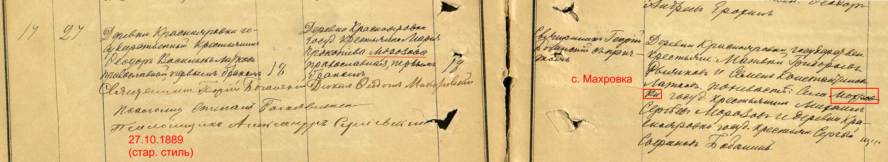

Мария Прокофьевна Лоткова (Морозова)

Девичья фамилия — Морозова, во втором браке — Остросаблина. Родилась примерно в 1871 г. Точное место её рождения неизвестно, но, судя по девичьей фамилии Марии, вовсе не типичной для Краснояровки, её предки не были родом из этой деревни и могли прийти туда из близлежащих селений. К примеру, представители этой фамилии встречались в соседних сёлах Посевкино или Шапкино. Впрочем, родство Марии Прокофьевны с ними доказать так и не удалось#. Хотя в записи о браке Мария называется крестьянкой Краснояровки, нет никаких свидетельств того, что она находилась в этой деревне с детских лет.
Осенью 1889 г. Марию, совсем ещё юную девушку, выдали замуж за её ровесника Фёдора Лоткова из Краснояровки, и уже через три года, в 1892 г., родилась их первая дочь Матрёна. Поскольку в те годы действовала всеобщая воинская повинность, вскоре Фёдора забрали на военную службу. С этого момента Мария Прокофьевна стала именоваться не крестьянкой, а солдатской женой. Когда же Фёдор Васильевич наконец вернулся домой, в семье родился сын Андрей (1897), а вслед за ним и Григорий (1899). Семейное счастье длилось, однако, недолго — всего через полгода муж Марии Прокофьевны внезапно умер от чахотки. Таким образом, брак Лотковых продлился всего около десяти лет, а на руках у Марии Прокофьевны остались трое детей, двое из которых были ещё младенцами.
Справиться с хозяйством в одиночку вдове было не под силу, а потому уже через год, в 1900 г., она вышла замуж второй раз — за своего односельчанина Федота Васильевича Остросаблина. В свои 33 года он был уже дважды вдовцом, и от предыдущих браков у него тоже, наверняка, были дети. Впрочем, это не помешало ему взять под опеку и малолетних детей Марии Прокофьевны. Кроме того, у пары родилось не меньше четырёх общих детей. Их имена: Василий (1903), Алексей (1905–1905), Александра (1906), Наталья (1908). Только об Алексее известно, что он умер в младенчестве — от неизвестной кишечной болезни.
Не позже 1919 г. Мария Прокофьевна сосватала старшего сына Андрея своим соседям по селу — Михаилу и Марии Подковыровым. Очевидно, что с ними она зналась уже давно, о чём говорит хотя бы то, что больше двадцати лет назад она присутствовала на церковном крещении их старшей дочери. Таким образом, родители молодых приходились друг другу не только сва-тами, но и кумовьями. Так в старину называли «родственную» связь, возникшую через крещение детей.
О том, как сложилась дальнейшая судьба Марии Прокофьевны, к сожалению, ничего неизвестно, но, судя по всему, остаток жизни она также провела в Краснояровке.
# В метрических книгах села Шапкино, что лежало в 10 верстах от Краснояровки, в 1871 г. имеется запись о рождении Марии Прокофьевны Масликовой. Там же приводятся и имена её родителей: Прокофий Данилович и Варвара Васильевна. С учётом того, что наличие двух или даже трёх фамилий было довольно распространённой среди крестьян практикой, можно было бы предположить, что Мария Масликова и Мария Морозова — одно и то же лицо. Однако, никаких документальных подтверждений этому пока не найдено.